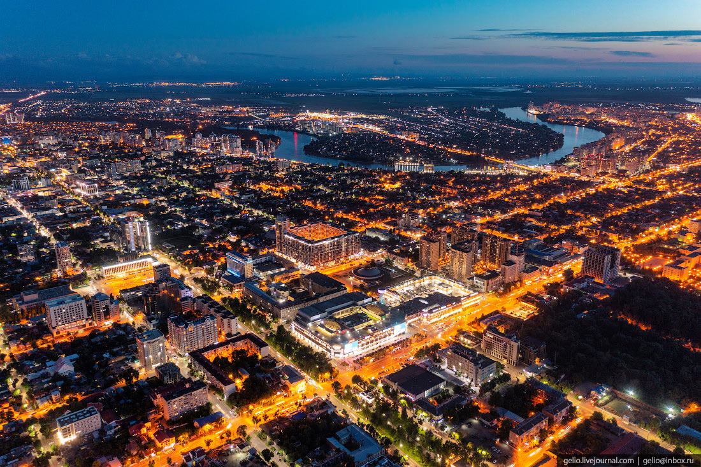

Какой-то текст о Сочи Сочи - город на юге России в Краснодарском крае, расположенный на побережье Чёрного моря. Это самый оживлённый морской курорт страны и столица Зимней Олимпиады 2014 года. Сочи именуют курортной или летней столицей России, а также «черноморской жемчужиной». Это колоритный южный город, который славится протяжённой береговой линией и замечательными пляжами, тёплым и чистым морем, вкусной кухней и живописной природой.
А сейчас не о Сочи а Чёрном море
Чёрное море — внутреннее море бассейна Атлантического океана. Проливом Босфор соединяется с Мраморным морем, далее, через пролив Дарданеллы — с Эгейским и Средиземным морями. Керченским проливом соединяется с Азовским морем. С севера в море глубоко врезается Крымский полуостров. По поверхности Чёрного моря проходит водная граница между Европой и Малой Азией.
А сейчас о Краснодаре

Краснода́р (до 1920 года — Екатеринода́р) — город на юго-западе России, расположенный на правом берегу реки Кубани, на расстоянии 120 км от Чёрного моря (по автодороге от пос. Джубга), 140 км — от Азовского моря (по автодороге от станицы Голубицкой) и 1300 км — к югу от Москвы (по автодороге М-4 «Дон»).Перейти к разделу «География» Административный центр Краснодарского края. Вместе с прилегающими сельскими населёнными пунктами образует городской округ город Краснодар.